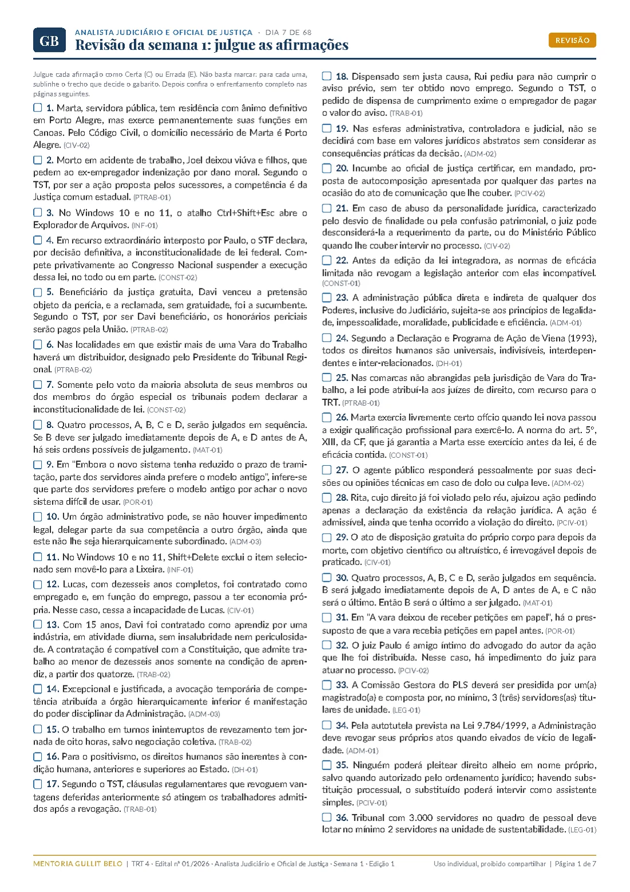
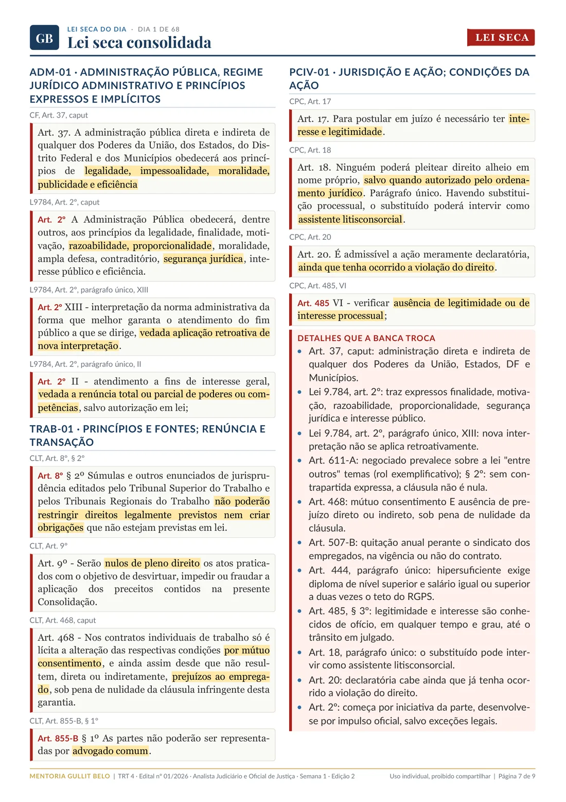
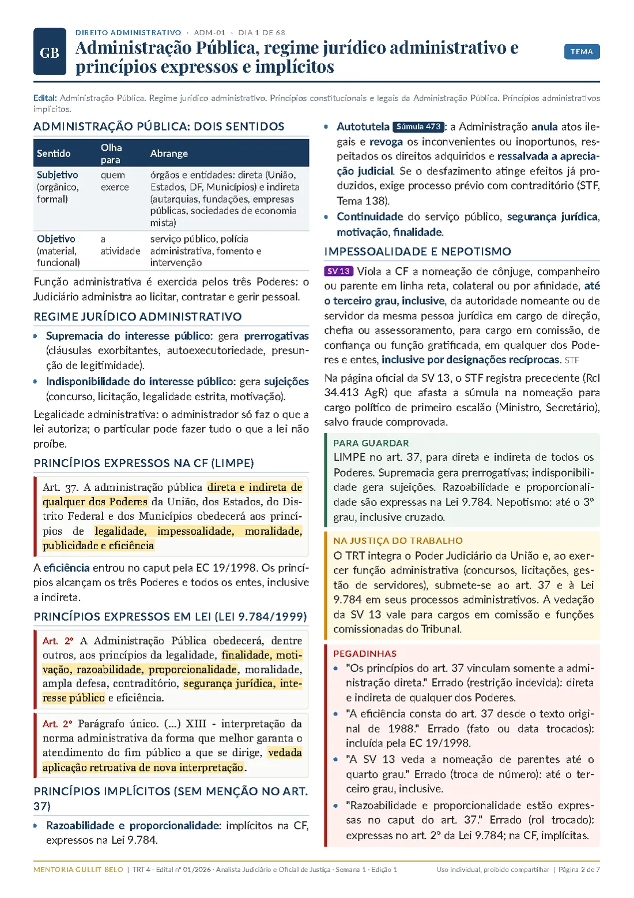
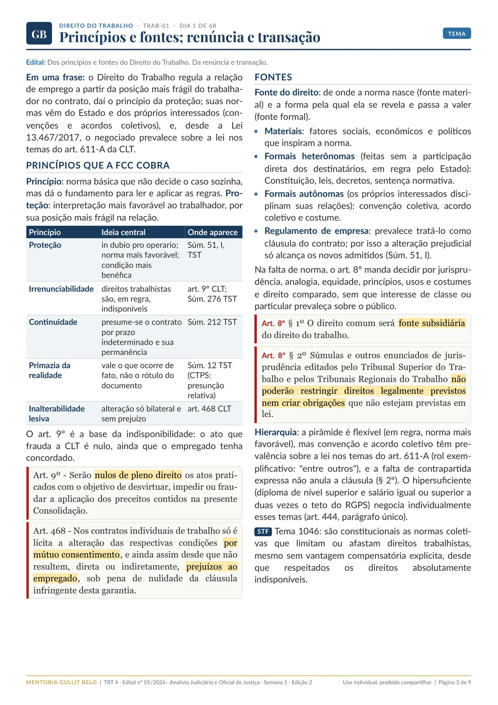
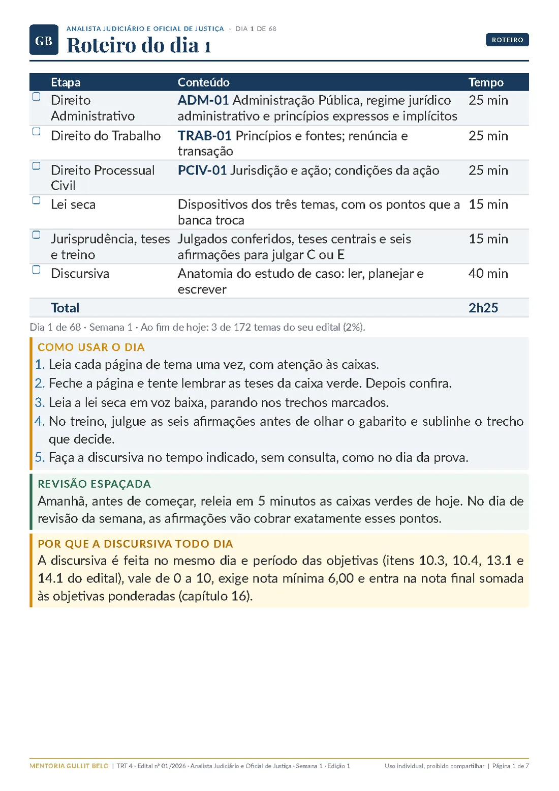
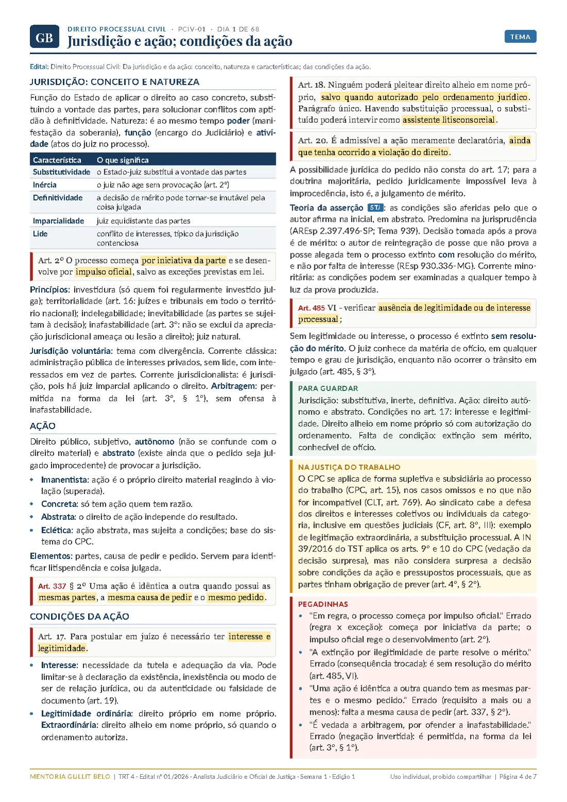
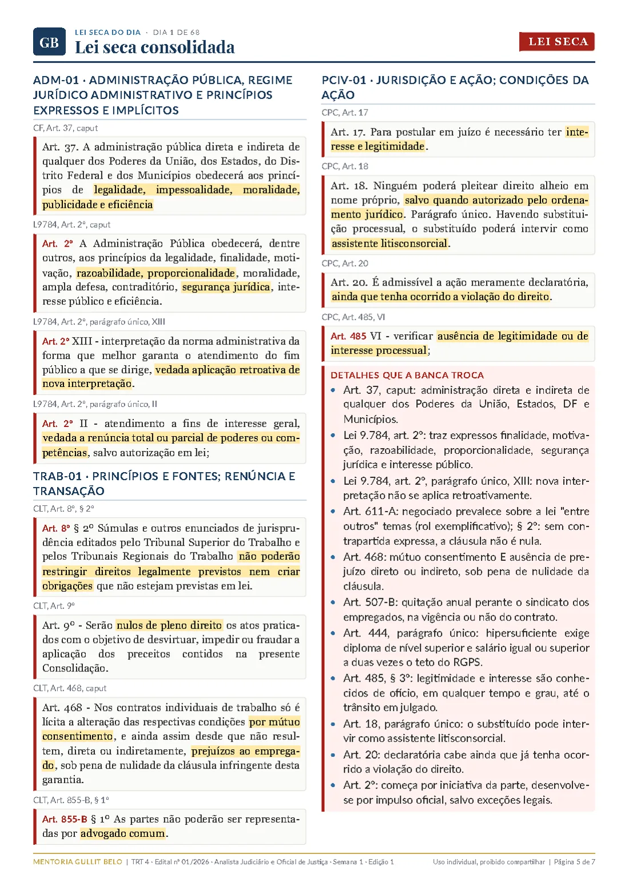
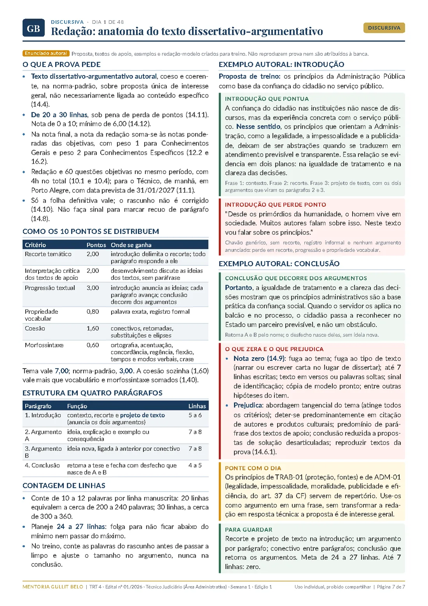

TRT 4 · Edital nº 01/2026 · FCC
Escrevi este material para o concurso do TRT 4, em duas versões: Analista Judiciário e Oficial de Justiça, com estudo de caso, e Técnico Judiciário da Área Administrativa, com redação. Cada dia tem três temas em páginas densas e organizadas, a lei seca vigente, os julgados que a FCC cobra, seis afirmações para treinar e uma página de Discursiva.
R$ 97 por cargo até 25/11, fim das inscrições · Semana 1 liberada na compra · garantia de 7 dias



O edital em quatro números
A nota final é a soma das objetivas ponderadas com a nota da Discursiva, de 0 a 10 (capítulo 16). A Discursiva é feita no mesmo dia e período das objetivas e é eliminatória: abaixo de 6 o candidato sai do concurso. E ela só é corrigida para os mais bem classificados nas objetivas.
Para estudar e para revisar
Regra, exceção, prazo, competência e o detalhe que a banca troca, em tabelas e frases curtas. Veja três trechos reais do Dia 1.
Cada tema fecha com o essencial, na caixa verde.
"LIMPE no art. 37, para direta e indireta de todos os Poderes. Supremacia e indisponibilidade dão a base do regime."
Quando a banca pode confundir dois institutos, eles aparecem na mesma tabela.
"Renúncia x transação: natureza, objeto e regra, numa tabela só, com o acordo extrajudicial do art. 855-B da CLT."
A afirmação errada, a técnica que a banca usou e a correção, lado a lado.
"Pela autotutela, a Administração deve revogar seus atos eivados de vício de legalidade." Errado (instituto vizinho): vício de legalidade leva à anulação.
Discursiva
O material segue o tipo de prova de cada cargo. Analista e Oficial fazem estudo de caso: uma questão prática de Conhecimentos Específicos, de 20 a 30 linhas (item 13.15). O Técnico faz redação dissertativo-argumentativa de 20 a 30 linhas, com 7 pontos de Tema e 3 de norma-padrão (item 14.5).
Como a banca erra
Antes de escrever, analisei 31 provas da FCC de 2024 a 2026, de sete TRTs, do TRF da 4ª Região, de TJs, MPs e Defensoria, alternativa por alternativa: 5.677 alternativas erradas classificadas uma a uma. Veja um exemplo de Direito do Trabalho:
CLT, art. 507-B
"É facultado a empregados e empregadores, na vigência ou não do contrato de emprego, firmar o termo de quitação anual de obrigações trabalhistas, perante o sindicato dos empregados da categoria."
A quitação anual é firmada no sindicato, não em juízo.
Afirmação no estilo da banca
"O termo de quitação anual de obrigações trabalhistas pode ser firmado na vigência ou não do contrato de emprego, perante a Vara do Trabalho."
Errada. O órgão foi trocado. Trocar quem decide, recebe ou homologa é uma das técnicas que a FCC mais usa, e em Constitucional é a primeira delas.
Teste rápido
São afirmações autorais, no estilo da banca, tiradas do material. Responda e veja o comentário com o fundamento.
O que vem no material
Todos os itens do Anexo II, inclusive o Regimento Interno do TRT 4, o Código de Conduta e Valores Éticos do Tribunal e os tratados de direitos humanos da lista do edital. Escolha o cargo e toque em uma matéria para ver o que a FCC mais cobra.
Como é um dia





Entrega
Acesso até a prova
Edital nº 01/2026. Um material por cargo, cada um com o programa do seu edital.
Compra pela Kiwify, com acesso imediato à Semana 1.
Compra pela Kiwify, com acesso imediato à Semana 1.
Garantia de 7 dias. Baixe a Semana 1, estude e, se não for para você, peça o reembolso pela Kiwify dentro de 7 dias da compra.
Perguntas
Quem se inscreve para Analista Judiciário Área Judiciária (código 01) ou para Oficial de Justiça Avaliador Federal (código 02) usa o material de Analista e Oficial: o programa específico dos dois é o mesmo, e a Discursiva é estudo de caso. Quem se inscreve para Técnico Judiciário Área Administrativa (código 19) usa o de Técnico, com redação. As outras especialidades têm programas próprios e não estão cobertas.
Pelo edital, o Técnico faz a prova de manhã e o Analista à tarde, no mesmo dia. Os Conhecimentos Gerais são os mesmos nos dois materiais. Os Específicos mudam: o de Analista tem Civil, Processo Civil e as matérias jurídicas em profundidade; o de Técnico tem noções das matérias jurídicas e Administração Pública. Quem estuda pelo de Analista cobre quase todo o jurídico do Técnico, mas não a Administração Pública nem a redação.
O roteiro do Dia 1 soma 2 horas e 25 minutos: 25 minutos por tema, 15 de lei seca, 15 de jurisprudência e treino e 40 de Discursiva. São 6 dias de estudo e 1 de revisão por semana.
Cada dia de estudo tem uma página de Discursiva, com as regras dos capítulos 13 e 14 do edital. Os modelos são para estudar a estrutura, não para decorar: o edital penaliza a cópia de textos prontos (itens 13.13 e 14.9, j).
Tem seis afirmações Certo ou Errado por dia e 36 na revisão de cada semana, escritas no estilo da FCC, com gabarito comentado. São autorais: nenhuma questão de prova é reproduzida.
Toda lei sai do texto vigente, e todo julgado é conferido no site oficial do tribunal. O Regimento Interno já está na versão de 1º/10/2026. Se uma norma do edital mudar até a prova, você recebe a página corrigida na área de membros e um aviso por e-mail.
As semanas já liberadas ficam disponíveis na hora da compra. O cronograma termina em dezembro, e a prova está prevista para 31 de janeiro de 2027, o que deixa semanas para revisar.
Pode, é assim que o material é entregue: um PDF por semana na área de membros da Kiwify. O uso é individual e o compartilhamento é proibido.
Quase vinte aprovações em concursos de tribunais (estaduais, federais, do trabalho e eleitorais), do Ministério Público, da AGU, do INSS e de universidades, além da OAB. Hoje sou servidor no TRT. Criador do @mentoriagb.
As sete páginas do primeiro dia estão abertas, para Analista e Oficial e para Técnico, com a Discursiva. Leia, faça o treino e decida depois.